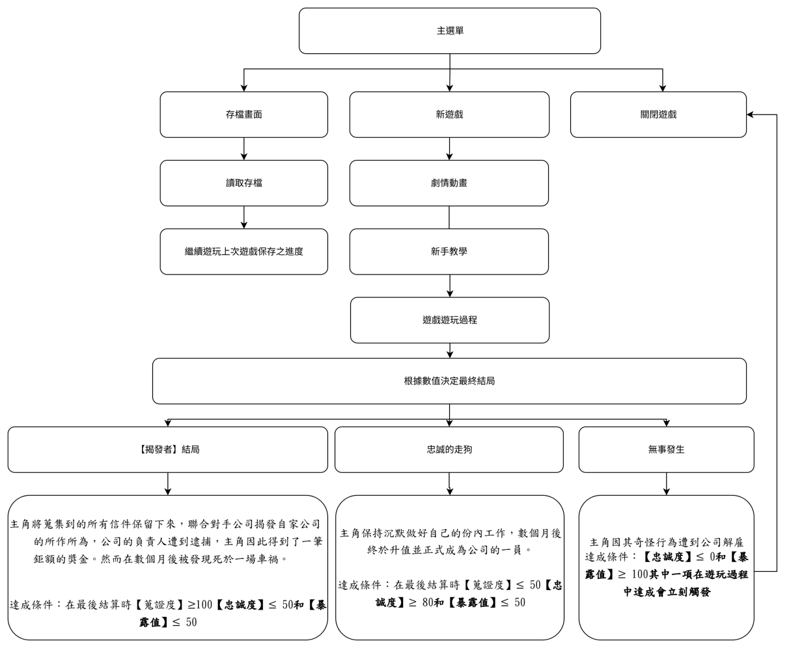
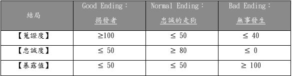
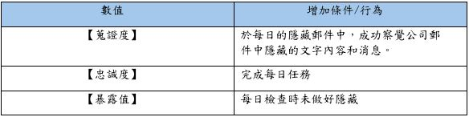
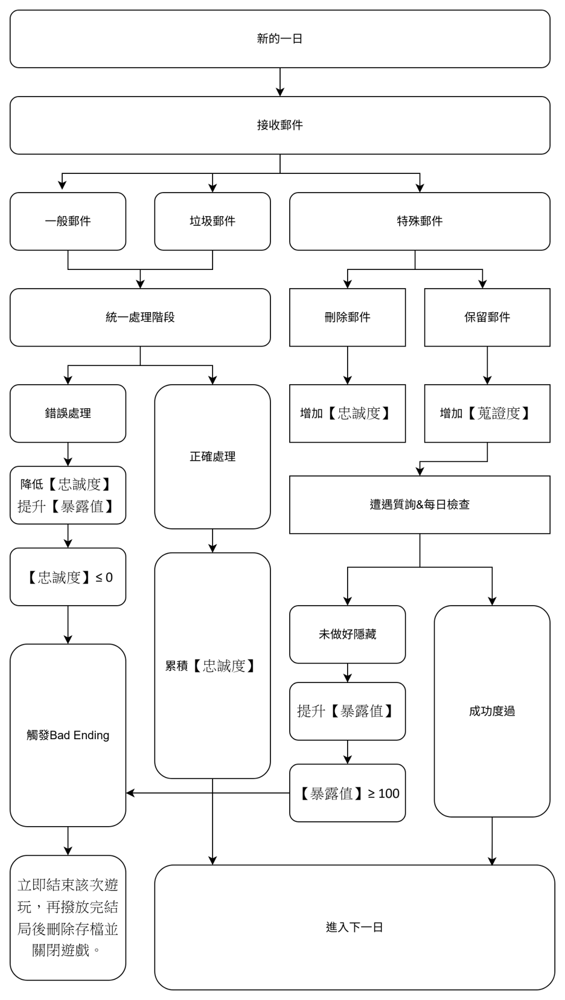

(一) 、 遊戲初步動機
起因是因為常常收到各種如廣告郵件、各種曾經註冊的網站傳來的行銷郵件，偶爾也會收到來自不明帳號的私人郵件，當初在進行初步構想的時候就想起，曾經有看過一款是在模擬
電腦病毒的相似遊戲，我就想以詐騙/騷擾郵件為主題製作一款遊戲。之後我又想到如果我把郵件跟恐怖的元素融合會是甚麼樣子的?《
UnSent》便是以此為契機做的發想。
(二) 、 遊戲目的
希望玩家在過程中除了去體驗一下關於郵件分辨這件事情，介於目前也有很多透過信箱寄件進行詐騙等事件發生，除了作為一個警惕外。還希望在遊玩過程中可以讓玩家體會到很多
事情不向表面上看起來的那麼簡單。在遊戲過程中，玩家隨著遊戲進展會逐漸發現信件中夾雜一些”不正常”的工作信件，玩家需《要謹慎思考，做出艱難的抉擇。並希望在遊戲結
束後能夠引起玩家反思。
基本玩法與介紹
(一) 、 操作方法
⚫ 滑鼠點擊物件/道具/畫面進行互動
(二) 、 遊戲優勢
我自己搜索了一下，這種把玩家放在道德標準上做選擇的遊戲其實不少，相關《
題材的也不少，但沒有真正意義上只有透過”信件”這一內容去理解整個遊戲的劇情和內容，結合
微恐或是驚悚的題材，在單純的面對文字也能感受到毛骨悚然、背後一冷的感覺或許是次相當不錯的體驗。
(三) 、 遊戲整體流程
如圖1（遊戲流程圖），玩家在開啟遊戲進入主選單後，主選單將提供三種選項分別是: 1. 離開遊戲
2. 開啟新遊戲 3. 讀取存檔 玩家選擇離開遊戲時將會關閉遊戲、選擇讀取存檔可以
讀取遊戲於上次保存點保存之遊戲進度，開啟新遊戲則會刪除舊的存檔並儲存全新進度的遊戲重新開始整個遊戲流程。

▲圖1（遊戲流程圖）
(四) 、 IF：新遊戲
當玩家開始新遊戲後將會在一開始撥放”開頭動畫”的檔案，讓玩家了解故事開始前因和玩家於遊戲中須達成的目標，撥放完畢後遊戲將進入”新手教學”，《遊戲中的”第一天”
即為【新手教學關卡】在新手教學中玩家將會進一步了解遊戲的運行機制，如：遊戲中天數的輪替、每晚上班前的準備階段及關卡中的目標和互動方法。
在完成教學關卡後遊戲將
進入正式遊玩的過程，玩家於過程中需在達成每天目標為前提並蒐集對應結局的資料和解所必要條件，已完成整個遊戲故事，遊戲將有三種結局分別是：Good《Ending、Normal
《Ending、Bad《Ending。根據玩家在遊玩過程中做出的選擇會累積不同結局的前置條件，三個結局對應三種數值分別是：【蒐證度】、【忠誠度】、【暴露值】在最後一夜結束後
系統將會根據”三個數值”的數據選取結局，並撥放對應的故事結尾動畫和結局文本。
根據下方：表格1(各結局之觸發條件一覽表)參考不同結局需求和其觸發條件，再根據表格2
(各數值提升所需的行為與條件)可以得知【蒐證度】、【忠誠度】、【暴露值】三個數值使其增加之條件和行為。
註：其中Bad《Ending會在【忠誠度】和【暴露值】其中一項達成就立刻觸發。

▲表格1：各結局之觸發條件一覽表

▲表格2：各數值提升所需的行為與條件
根據圖2（關卡遊玩流程）所示，為玩家在遊戲中每開啟一天循環會發生的事件流程圖，當準備階段完成後將會開始新的一日循環，玩家首先會先接收郵件分別為：垃圾郵件、一般
郵件、特殊郵件。隨著郵件進入後將會進入到處理階段，正確的處理將會累積【忠誠度】，錯度的處理郵件將會降低【忠誠度】並增加【暴露值】，當【忠誠度】和【暴露值】達到
一定條件將會觸發Bad《Ending並立即結束該次遊玩，再撥放完結局後刪除存檔並關閉遊戲。遊戲總共有七日，即含新手教程關卡共七關，玩家須在此期間做出選擇累積對應數值後
通關遊戲。

▲圖2（關卡遊玩流程）
(五) 、 遊戲整體流程
為線形推進流程的遊戲，再根據玩家做出的不同選擇引導至不同結局，其中特殊信件的去留、還有其中的內容，會影響到玩家做出不同結局的決策，隨著玩家遊玩推進劇情，直到所
有的信件都蒐集到後能夠理解到整個故事劇情，最後一日將會觸發結局選擇，根據選擇獲得不同的結果。
《UnSENT》故事大綱&結局
(一) 、 故事大綱
你人到中年失業後有很長一段時間找不到工作，父母早就在前幾年離去。也沒有其他兄弟姊妹，每個月因為付不出房租只好拖著，房東在上個月警告你如果再交不出房租就把你趕出
去。就在這絕望的情況下你收到了一封信件，是一份應聘廣告，內容是某個機構/ 人每天有超多郵件，他們需要有人來清理並過濾郵件，只
保留有用的工作信件。並且給的薪水非常
多，內容就是在公司的座位上每天晚上《
10:00~隔天早上《7:00《期間整理好昨日的郵件。你想了想決定去試試看，但隨著時間推移一切似乎沒有看起來那麼簡單。
(二) 、 結局
⚫ 【支線1：揭發者】
《主角將蒐集到的所有信件保留下來，聯合對手公司揭發自家公司的所作所為，公司的負責人遭到逮捕，主角因此得到了一筆鉅額的獎金。然而在數個月後被
發現死於一場車禍。
⚫ 【結局2：忠誠的走狗】 主角保持沉默做好自己的份內工作，數個月後終於升值並正式成為公司的一員。
⚫ 【結局3：無事發生】 主角因其奇怪行為遭到公司解雇，最後餓死在公寓。
(三) 、 遊戲背景故事
Mark《Morton 今年 38 歲，在他34歲時因工作的工廠倒閉面臨失業問題。
原以為只是短暫的低潮，卻沒想到這段找不到工作的日子一拖就是好幾年。他的父母
在他大學時就先後過世，家中沒有其他兄弟姐妹。
失業以後，他的生活變得越來越孤單。失去與人交流的機會和屢次碰壁的應聘讓他開
始失去自信，也被迫接受一些不穩定的零工來勉強維持生計。
重複每天清晨醒來躺在床上，對未來感到茫然；日子像是反覆播放的畫面，不確定明 天會比今天更好，還是更壞。在這樣的狀態下，最終他與社會脫節。
作息混亂、身體狀況日漸下滑，與人的交流越來越少直到有天他收到來自IMM科技公
司的應聘廣告，廣告上標示著可觀的薪水，恰巧Mark因為付不出房租，房東已經通知他，如果還是付不出房租將在下個月把她掃地出門。
Mark 拿著他最後的希望來到IMM的大門，裡面人來人往穿著破舊的他與這個科技公 12
司格格不入，他膽怯的升起逃跑的念頭，但生活的壓力讓他鼓起勇氣邁開腳步。意外的是他居然成功真的應聘上一個職位！
他們告訴Mark他只需要在每天晚上10:00到隔天早上《7:00《期間，來到公司的44
層，他們會在那裡準備好一間辦公室，Mark需要在上班時將”各部門主管”昨日收到的郵件和隔日會需要用到的郵件進行分類。
當Mark詢問跟她介紹的人事還有什麼需要注意時，對方只對他說：
「有些私人郵件可能也會意外混入，如果看到了請勿查閱。」人事微笑對他說，Mark只覺得那個笑容虛假，甚至起了一身雞皮疙瘩。
三天後Mark順利入職公司，人事通知他會在下個禮拜一開始上班，試用期為七天，等
七天過後就能成為正式員工，而Mark要做的不過是不要犯錯。”聽起來挺簡單的”他想，現在是冬天，禮拜一的夜晚風有些大，他穿好唯一一件外套從家裡出發來到公司。
晚上10:00這裡根本沒人，除了門口的安保人員以外，Mark踏進大樓拿著前幾天收到
的通行證走入大樓，搭乘電梯來到44樓後他根據指示找到他的辦公室，事實上只是雜物間改造的臨時辦公室。
他把東西放下後，環繞四周，架子上有些雜物，房間正中間靠牆處有一張桌子跟一台
老舊電腦，和科技公司的形象非常不符合，Mark覺得那台電腦估計比他年紀還大。他坐到電腦前面打開，意外的是系統居然是最新的系統，看樣子他們有可能只是沒有多餘的電腦能讓Mark使用所以從倉庫拿出這台骨董並做了一次翻新。
第一天挺順利的，可能是知道他今天剛上班，雖然半夜沒人讓Mark總感覺毛毛的，但幸運的是沒有任何怪事發生。等到Mark聽到外面開始有人交談的聲音他注意到也到了下班時間，伸了伸懶腰，他拿起自己的東西推開門，外面的辦公室已經有人到公司正泡著咖啡，有些則在閒聊。有人注意到Mark從角落的儲物間走出來，猜測他可能就是新入職的”信件秘書”，有些人看到他會微微點頭示意，大部分則選擇無視他。
Mark 也不在意那些成功人士會不會記住自己，他拖著疲憊的身軀離開公司回到家裡， 13
進到破爛的公寓他累得倒在床上，意識逐漸模糊睡著了。再次睜眼已經來到下午五點，離他上班只剩下五個小時，Mark快速的洗漱後來到家附近的便宜中餐吃飯，等到晚上九點他再次啟程前往公司。
這次他在上工後注意到桌上收到了來自人事部的訊息，上面說他們有幾份應聘資料不小心混入分類郵件的信箱中，要他注意不要把資料丟掉，並幫他們整理好後在下班時回傳給他們，Mark看著那個紙條將他貼在電腦上面，他把家裡的盆栽帶過來放到桌上，希望可以減輕晚上陰森的感覺。
一切都進行的挺順利的，他找到了人事部要求的資料並好好保存起來。但到後半夜時，他注意到郵件中有一封不像公文也不像垃圾郵件，似乎是從私人信箱中發出的收件者顯示是一位叫做”MR”的人，但他看不出來是給哪一個部門的主管。
Mark
看著郵件他想起了在介紹工作那天那位人事部門的員工跟他說的忠告，看著那封郵件Mark不確定是否該保存下來又或著他應該裝不知道，當作垃圾郵件將其處理掉。斯來想去Mark決定保存下來，然後將其偷偷轉寄到自己的私人信箱中。
他心裡有一股強烈的不安，那種感覺就像是身處冰冷的深海。
接下來的幾天，Mark《成了這座摩天大樓裡最沉默的幽靈。他在深夜的《44《樓穿梭，
那台老舊的電腦成了他唯一的同伴，在後續幾天他發現更多同樣是給”MR”的那些私人郵件數量越來越多，Mark閱讀了幾封就意識到公司藏著駭人的秘密。
原來IMM《科技公司並非單純的科技先驅，他們利用應聘者的資料進行非法實驗。那些
像他一樣走投無路、沒有家人的邊緣人，名義上是來面試，實際上只要被判定不符合就會徹底消失在世上，成為冰冷實驗數據的一部分。
他看著電腦螢幕上那些冰冷的人名與編號，手心沁出了冷汗。他意識到，如果他沒有
應聘上這份工作，或許他早就成為那些名單中的一員。
試用期的第七天，也是最後一天。Mark《的隨身碟裡已經塞滿了足以讓《IMM《徹底崩塌 14
的證據。他再次走出那間陰暗的儲物間時，早晨的陽光刺得他眼睛生疼。他看著那些衣著光鮮的成功人士，Mark想知道，他們每個人都知道這間公司的黑幕嗎？或著他們跟他一樣只不過是為了生活待在這裡？
他沒有回家睡覺，而是轉身走向了《IMM《最大的競爭對手——「瓦倫泰科技」的總部。
幾個月後，IMM《科技公司的醜聞引發了全球性的震撼。那些掩蓋在黑暗下的非法勾當
被公諸於世。在瓦倫泰與警方的聯手策劃下，IMM《的負責人與核心高層在一次會議中被當場逮捕。Mark《Morton，這個曾經在破爛公寓裡等死的男人，成了為人所知揭發黑暗的英雄。
作為關鍵證人與舉報者，Mark《獲得了一筆來自政府與補償基金的鉅額獎金。他搬離
了那棟漏水的公寓，換上了昂貴的西裝，甚至開始計畫一場遲到了十幾年的旅行。Mark
沒想過自己的人生還能迎來新的高峰，或許他真的該好好感謝IMM當初給了他那份工作，而他也是為了世界做出正義的選擇。然而，正義的勝利往往伴隨著無法預見的利息。
三個月後的一個深夜，冷冽的冬風依然在城市街道間呼嘯。Mark《駕駛著新買的跑
車，行駛在空無一人的高架橋上。前方原本運作正常的紅綠燈突然詭異地閃爍起來，《 Mark
感到不對倒吸一口涼氣，猛踩剎車，但車輛卻像是被某種遠端指令接管了一般，引擎咆嘯劃破寧靜的黑夜。
隔天早報的一個小角落，刊登了一則不起眼的新聞：《「知名揭黑案證人《Mark《
Morton，因車禍導致車輛墜落橋下，當場死亡。初步調查結果顯示，疑似為車輛系統電子零件故障導致失控。目前警方已介入調查，但不排除為單純意外。」